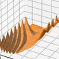
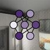
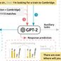
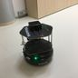
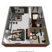
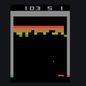
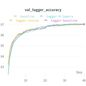
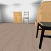

News
2022 Looking for a MSc and BSc students. Please contact me in case you want discuss thesis topics.
17/9/2021 Our dialogue system paper got accepted to EMNLP, 3rd NLP4ConvAI
9/2021 I was a member of the IROS 2021 conference organizing comittee
1/9/2021 Started PhD at CTU with Torsten Sattler as supervisor
16/6/2021 Graduated with honors from the Charles University
28/2/2021 Our visual navigation paper got accepted to ICRA 2021, RA-L
Publications




Visual Navigation in Real-World Indoor Environments Using End-to-End Deep Reinforcement Learning published in RA-L 2021 cited by: 5

Vision-based Navigation Using Deep Reinforcement Learning 2019 European Conference on Mobile Robots (ECMR), 2019, p.1-8 cited by: 42
Education
Charles University (Jun 2021)
Master in Artificial IntelligenceFaculty of Mathematics and Physics, graduated summa cum laude
Czech Technical University (Jun 2019)
Bachelor in Computer ScienceFaculty of Electrical Engineering, graduated summa cum laude
Sungkyunkwan University (Dec 2017)
One semester visiting studentCollege of Sciences and Engineering, cum. GPA 4.00/4.00
Selected experience
Czech Institute of Informatics, Robotics and Cybernetics, CTU Sep 2021 — Present
PhD student- Supervisor Torsten Sattler
- Using priors in neural rendering and neural scene representation
Supervisor Torsten Sattler, neural scene representation and rendering
Czech Institute of Informatics, Robotics and Cybernetics, CTU Aug 2020 — Aug 2021
Junior researcher- Visual navigation using deep reinforcement learning (DRL)
- Implementing SoTA DRL algorithms including Rainbow, PAAC, AlphaZero
- Publishing an open-source 3D environment simulator to train DRL agents
- Working with Tomas Mikolov on cellular automata applied to NLP
- Researching dialogue systems with pre-trained LMs (GPT2, BERT)
- Running large distributed GPU training
- Achieving 3rd place in the DSTC9 end-to-end multi-domain dialogue task
Visual navigation using deep reinforcement learning, end-to-end dialogue systems using transformer models
Delft University of Technology Feb 2019 — Apr 2019
Research intern- Visual navigation using deep reinforcement learning (DRL)
- Working under Prof. dr. Robert Babuska at 3me
- Publishing open-source DRL PyTorch library
- Evaluating navigation algorithms on real mobile robots
Working with Robert Babuska on visual navigation using deep reinforcement learning
Valatron Jun 2018 — Jan 2019
Backend developer- Designing Node.js API backend and .NET Core backend
- Leading a team of developers
- Working on SPA frontend (React.js)
- Deploying applications built using Azure Functions
Center for Machine Perception Feb 2018 — Jun 2018
Research intern- Building object detectors using fully convolutional neural networks
- Implementing RetinaNet, FasterRCNN, MaskNet (SoTA at that time)
- Preparing object detection datasets and data pipelines
Object detection for automotive industry
Alza.cz Jun 2016 — Feb 2018
Full-stack developer- Architecting backend (.NET core, WCF, SOA, SQL)
- Designing continuous integration in TFS
- Front-end website development (ASP.NET Web Forms)
CZECH NEWS CENTER Mar 2015 — May 2016
Mobile application developer- Tydenik Reflex app for Windows Phone — MVVM Light
- Reflex app for Windows 8 — MVVM Light
- Blesk app for Windows 8 and Windows Phone 8 — build with Prism
Teaching
Introduction to Artificial Intelligence (Summer 2020)
Teaching assistant at FEL, Czech Technical UniversitySearching state space, two player zero-sum games, constraint satisfaction problems, planning, knowledge representation in FOL, decision making with imperfect information, MDP, evolutionary techniques
Languages
English C1/C2 (IELTS 8.0)
French B1
Czech native
Other projects

Deep RL PyTorch https://github.com/jkulhanek/deep-rl-pytorch Library for training DRL agents
DRL, PyTorch
DRL, PyTorch

LemmaTag https://github.com/jkulhanek/lemmatag Implementation of SoTA lemmatizer and tagger achieving 98.75% and 96.67% accuracies respectively on UD Treebank
NLP, TensorFlow 2
NLP, TensorFlow 2

DMHouse https://github.com/jkulhanek/dmhouse An indoor 3D environment simulator for pre-training VN agents
DRL, Bazel
DRL, Bazel